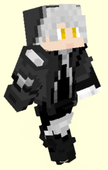
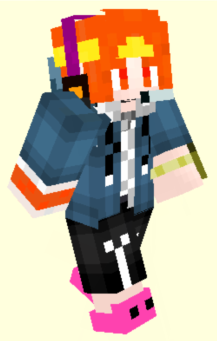
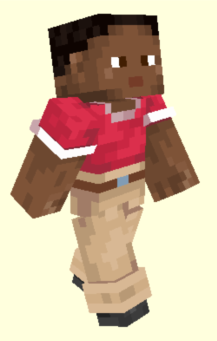
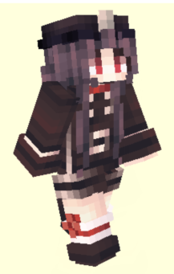
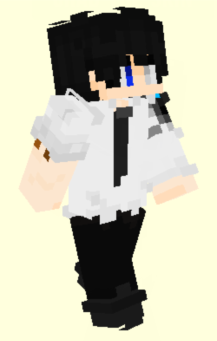
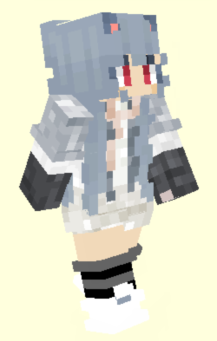
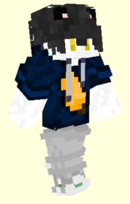
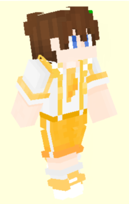

Old Players Club (老东西俱乐部，简称 OPC) 是由一群玩 Minecraft 时遇到的玩家组成的一个小型玩家俱乐部。
OPC 在 2020 年末初步成型，于 2021.10.2 正式成立，目前有成员 16 名。初名为 Oldoorxi (ODX), 后改名 OPC.
我们玩 Minecraft, Counter-Strike 2 和 Valorant 等游戏。作为一个充满活力和热情的俱乐部，我们致力于创造一个友好、和谐、有趣的环境。
在 Minecraft 中，我们体验各种各样的小游戏，展现成员的独特才华。OPC 旗下还有一个造图组 Milkmappers.
在 Counter-Strike 2 和 Valorant 这样的竞技游戏中，我们追求团队合作和竞技精神，共同挑战更高的游戏水平。
[1080P 裁剪 / 8K 裁剪] 右手 拍摄 1226*920 2024.2.10 Soartex Fanver 材质包
第 3 排: 尘墨 XTS 天弓 默默
第 2 排: 右手 果冻
第 1 排: 芒果 龙王 本子 剑鱼
XTS
MilkmappersChiwaInori [XTS] | ESFP
现任 OPC 群主，外号小天使（因为 XTS 是小天使的首字母）

尘墨
MilkmappersChen_Mo_cht [CM]

默默
Milkmapperstuffcute_WDNMD [TUFF] | ISFJ
我是土匪浮空推特，是个初升
在别人眼里我是魅魔的儿子，是男娘的老公，是各位的狗

天弓
MilkmappersSky_bow_orange [SKB] | IMNB ^
第一届未举办的 ODX FPS 大赛抽象马枪冠军；捂胃契约皮肤锐评大亡，剪寄糕手，door 雪生，破防红温专家
群内最优秀也是唯一的 mc 材质包制作者，全国英语创新大赛省级一等奖获得者。自封本群牛子最长。无套 M4A1 爱好者。别称 skybyd，天弓你个 byd
^ "不想整mbti" "我觉得mbti违背了辩证唯物主义" "D:" "@XTS 所以给我mbti填个imnb" ":d"

AMY
Calabiyau_Player [AMY]

本子
RAYFA_Bz [BZ] | ISFP
FPS 砖家，MC 转瓦的典型，拥有 CS 历史段位双 AK，瓦历史段位黄金一的职业"水"平
目前处于坐牢阶段中

CY
CY_wl [CY]

果冻
zsgdlcj [KYU]
道馆转嫁，拥有十八厘米棘把
目前正在道馆

剑鱼
MilkmappersIm_SwordFish [SF]

龙王
Lw_Odin [LW]

芒果
Mangguo_CAT [MG]
芒果，一只猫，furry，电脑爱好者，瓦批和平主义者，丝瓜味薯条，队友压力对象

右手
you_shou [YS]
右手，1/4up猪、1/4摄影师、1/4Cypher、1/4鸽子、Valorant压力怪、OPC的TS3聊s服务器搭建者、OPC开服工具人、土匪浮空推特的蝶、By2超级粉丝、TE挂饰推销员、可燃冰爆头王、OPC最大的略磨地下水拥有者、封装的涂鸦警帽 (军绿) 狂热爱好者、不吃m记会死星人、88vip和plus会员持有者

大蛋糕
潜水Big__Cake [BC]
落夏
潜水luoxia_ya [LX]

牛排
Milkmappers 潜水Tasty_Steak [TS]

小朱
潜水Invisible_Love [JXZ]
* AMY, 大蛋糕, 落夏 暂无个人页面。
** 皮肤渲染图来自 Minecraft Tools. AMY, 落夏 无可用皮肤。